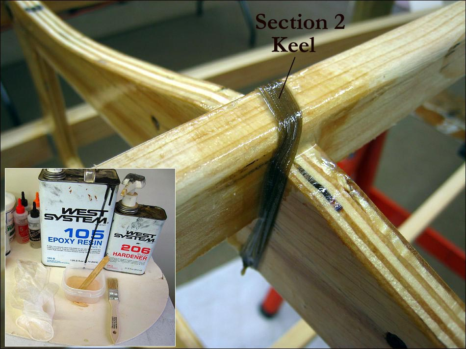

| Lash / Glue Frame | Menu Previous Page Next Page |
|

Mix the resin thoroughly and apply with a small inexpensive brush. Saturate the lashing. Go back over each lashing on the frame to remove any excess resin that is pooling or dripping. Now is a good time to coat the plywood cross sections and especially the plywood edges with epoxy. This will seal the edges and make them waterproof. Throw away the brush. After curing overnight, apply a second thin coat of epoxy to the lashing. Lightly sand the edges of the plywood and apply a second coat there also. The face of the plywood will not require a second coat but will later get a coat of urethane.
|
|